-
풀무원녹즙
채소습관 케일&사과 (130ml)
2,900
2,320원 ~ 20%
-
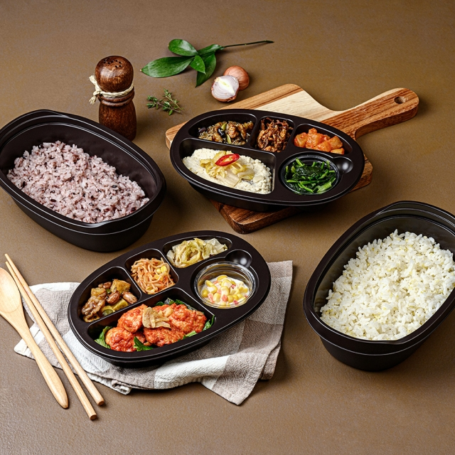
디자인밀
시그니처 밸런스 식단 (1일1식)
9,000
8,280원 ~ 8%
-
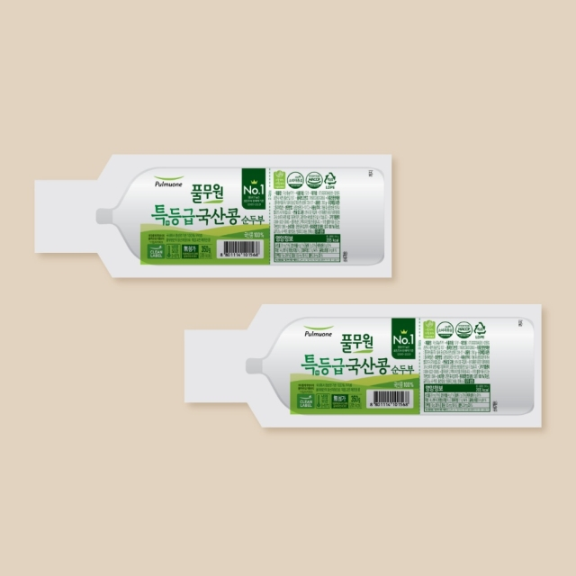
풀무원식품
국산콩 순두부 (350gx2개)
4,000
바른먹거리
Pulmuone’s Food Town
더보기 >
지속가능식품
내 몸에도 지구 환경에도 좋은
Sustainable food
이웃사랑, 생명존중의 정신에서 시작한 풀무원의 바른먹거리는
내 몸에도 지구환경에도 좋은 지속가능한 바른먹거리, ‘지속가능식품’으로 진화합니다.
바른먹거리 원칙
달라지는 현대인의 식문화에 맞춰 함께 변화하는 풀무원 바른먹거리원칙.그 기본이 되는영양균형은 물론 지구와 공존하기 위한 친환경 제도,까다롭고 투명한 첨가물원칙인 클린라벨로 풀무원 바른먹거리가 한 발 더 나아갑니다.
바른먹거리 캠페인
바른먹거리의 중요성을 알리고 바른 식습관을 교육합니다.
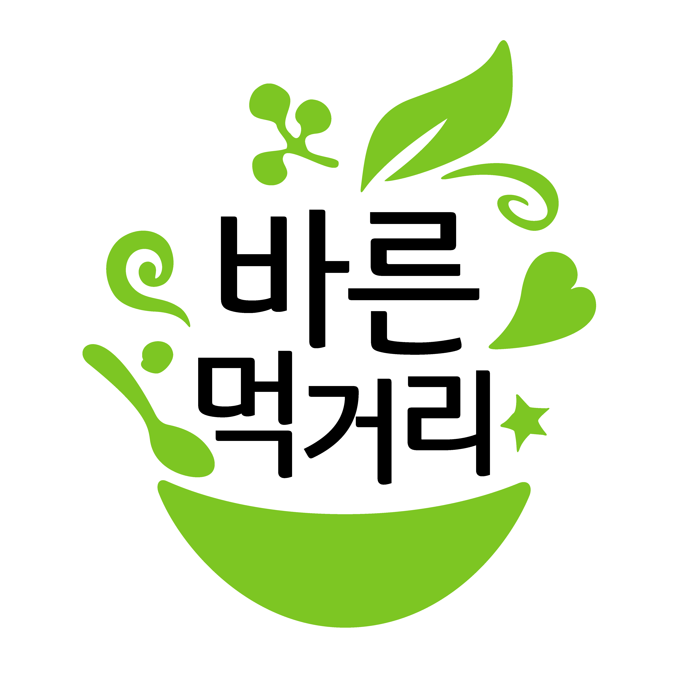
사회책임경영
responsible management
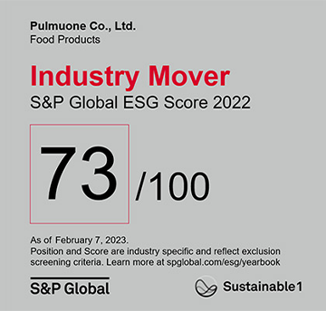
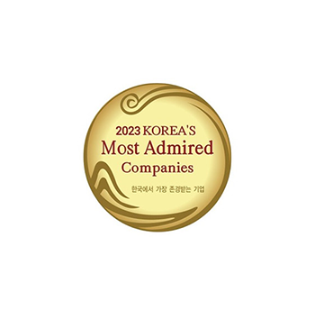
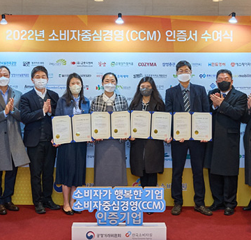
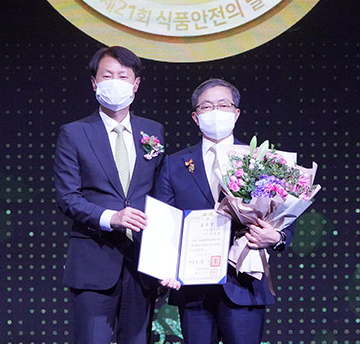
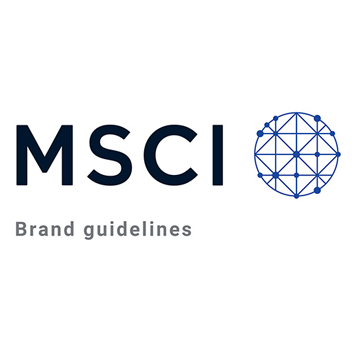
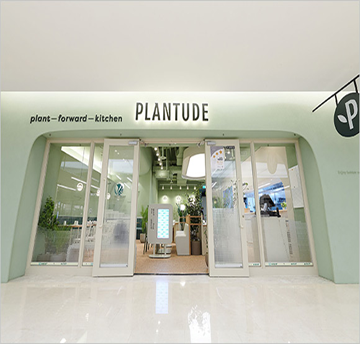
‘나와 내 가족의 건강과 행복, 더 나아가 지구환경의 건강까지 두루 살피는
지속가능 식생활’은 이제 이 시대의 보편타당한
가치가 되어 우리의 일상에 공기처럼 스며들고 있습니다.
-
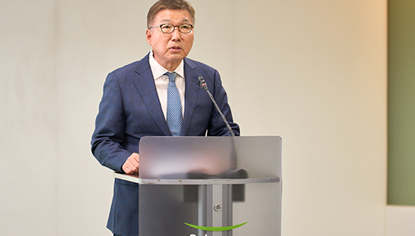
기업뉴스
풀무원, 창사 42주년 기념식 개최
풀무원이 창사 42주년 기념식을 개최하고, ‘신경영선언’ 실행 고도화를 통해
글로벌 No.1 지속가능식생활기업으로 도약하겠다는 의지를 밝혔습니다.
2026년 5월 12일
-
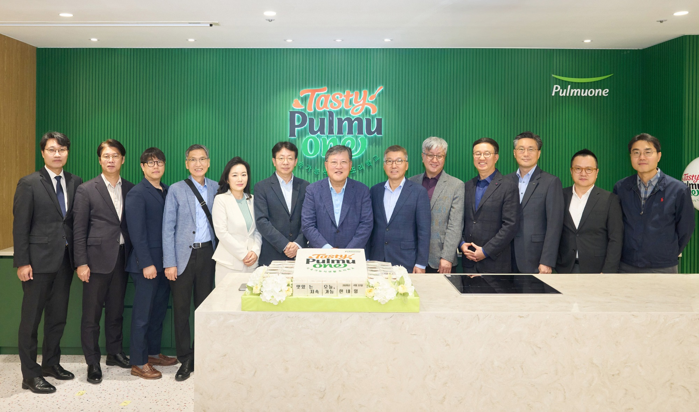
기업뉴스
풀무원, '테이스티풀무원' 개교
풀무원이 지속가능 식생활 확산을 위해 국내 첫 지속가능식생활 조리학교
'테이스티풀무원(Tasty Pulmuone)'을 열고 본격 운영에 나섰습니다.
2026년 4월 23일
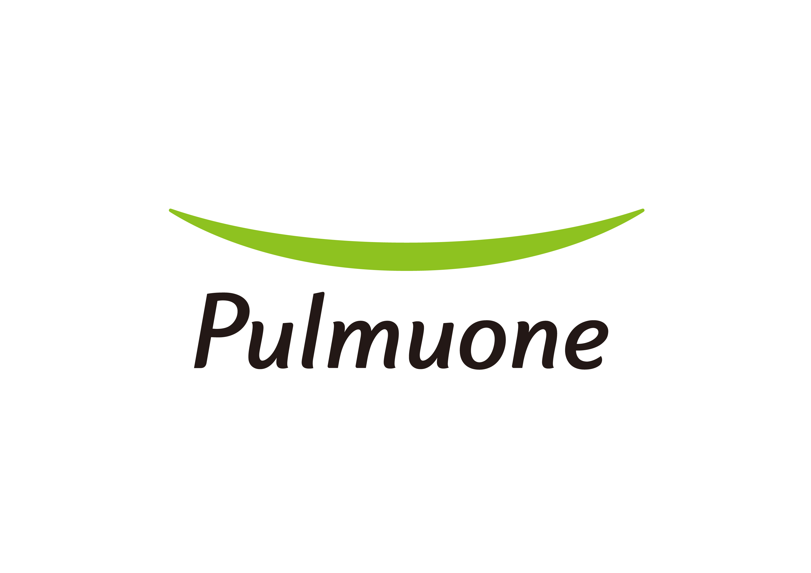
기업뉴스
풀무원, 2025 S&P CSA 글로벌 식품기업 Top 3 선정
풀무원이 S&P Global 주관 '2025년 지속가능성 평가(CSA)’에서 글로벌
식품기업 3위(2026년 3월 기준)를 기록하며 역대 최고 순위를 달성했습니다.
2026년 4월 15일
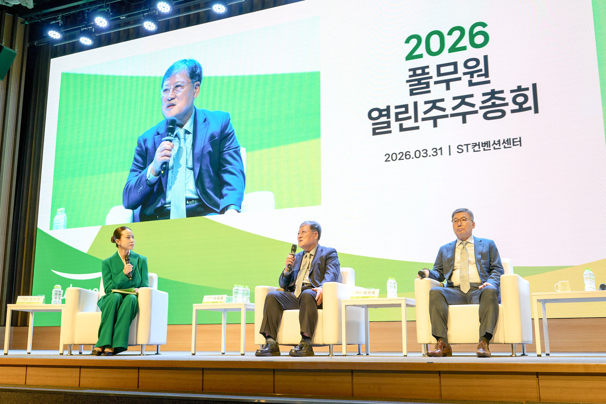
기업뉴스
풀무원, 2026 열린 주주총회 개최
풀무원은 ‘2026 열린 주주총회’에서 AX 혁신과 신성장 동력 확보를 통한
글로벌 NO.1 지속가능식생활 선도기업으로의 도약 의지를 밝혔습니다.
2026년 3월 31일
video
-
풀무원, 지속가능 가치 더한 ‘K-원볼밀’로 글로벌 시장 공략
기업뉴스
2026년 6월 11일
-
풀무원샘물, e스포츠 대회 ‘2026 LCK Road to MSI’에 제품 2만 병 지원
브랜드뉴스
2026년 6월 15일
-
풀무원 뮤지엄김치간, ‘한국의집’ 셰프와 함께하는 ‘시니어 김치학교’ 진행
뮤지엄김치간
2026년 6월 01일
-
풀무원푸드앤컬처, 6월 호국보훈의 달 맞아 국립현충원 묘역 정화 봉사활동 진행
사회공헌뉴스
2026년 6월 11일
-
풀무원푸드머스, 인천옹진군 어린이·사회복지급식관리지원센터와 올바른 식습관 형성 위한 MOU
기업뉴스
2026년 6월 10일
-
풀무원, 프리미엄 다용도 조리 가전 ‘스팀 솔루시온 멀티 오븐’ 출시…스팀 전문 라인업 완성
브랜드뉴스
2026년 6월 10일
customer support
-
불만 접수
유통기한 문의
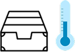
보관방법 안내
배송 문의